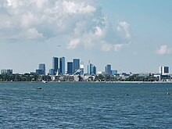

Economy of Estonia
|  | |
| Currency | Euro (EUR, €) |
|---|---|
| Calendar year | |
Trade organisations | EU, WTO and OECD |
Country group | |
| Statistics | |
| Population | |
| GDP | |
| GDP rank | |
GDP growth |
|
GDP per capita | |
GDP per capita rank | |
GDP by sector |
|
| |
Population below poverty line | |
| |
Labour force | |
Labour force by occupation |
|
| Unemployment | |
Average gross salary | €2,065, monthly (December, 2023) |
| €1,598, monthly (December, 2023) | |
Main industries | engineering, electronics, wood and articles of wood, textiles, information technology, telecommunications |
| External | |
| Exports | |
Export goods | Electrical equipment, wood and articles of wood, mineral products, agriculture products, mechanical appliances |
Main export partners | |
| Imports | |
Import goods | Electrical equipment, transport equipment, agricultural products, mineral products, mechanical appliances |
Main import partners | |
FDI stock | |
Gross external debt | |
| Public finances | |
| Revenues | 38.7% of GDP (2019)[16] |
| Expenses | 39.0% of GDP (2019)[16] |
| Economic aid |
|
| |
All values, unless otherwise stated, are in US dollars. | |
.jpg){kind=link}
The economy of Estonia is rated advanced by the World Bank, i.e. with high quality of life and advanced infrastructure relative to less industrialized nations. Estonia is a member of the European Union, eurozone and OECD[20] The economy is heavily influenced by developments in the Finnish and Swedish economies.[21]
After Estonia restored its independence in 1991 and became a market economy, it emerged as a pioneer in the global economy. Estonia styled itself as a bridge between East and West, adopting significant economic reforms and technological innovations. In 1992, the country adopted the Estonian kroon as its currency, this stabilised the economy. In 1994, it became the first country in the world to adopt a flat tax, with a rate of 26% regardless of personal income. Estonia received more foreign investment, per person, in the late 1990s than any other country in Central and Eastern Europe. The country has been catching-up with the EU-15 - the richer European countries. Its GDP per capita grew from 35% of the EU-15 average in 1996 to 65% in 2007, similar to Central European countries.[22] Income per person was $49,000 in 2023 according to the IMF; this was between Poland and Portugal, but below Spain.[23]
For Estonia, the 2007–2008 financial crisis was easier to weather, because its budget has consistently been kept balanced, and this meant public debt relative to GDP remained the lowest in Europe. The economy recovered in 2010.[24] In January 2011, Estonia adopted the euro, joining the eurozone.[25] Estonia has demonstrated resilience, with a strong service sector, particularly in IT due to the Tiigrihüpe project, and advanced e-government services. Estonia's commitment to a circular economy, innovation and its success in maintaining a balanced budget, low public debt, and a competitive tax system have positioned it as a model of economic reform and growth in post-Soviet Europe.
History
[edit]In the decades prior to World War I and independence, during the Czarist rule a rather large industrial sector developed in Estonia. For example, the Kreenholm Manufacturing Company was then the world's largest cotton mill.
Independence
[edit]After declaring independence in 1918, the Estonian War of Independence and the subsequent signing of the Treaty of Tartu in 1920, the new Estonian state inherited a ruined post-war economy and an inflated ruble currency. Despite considerable hardship, dislocation, and unemployment, Estonia spent the first decade of independence entirely transforming its economy. In 1918, The Czarist ruble was replaced by the Estonian mark, which was in circulation until 1927. By 1929, a stable currency, the kroon, had been established. It was issued by the Bank of Estonia, the country's central bank. Compensating the German landowners for their holdings, the government confiscated the estates and divided them into small farms, which subsequently formed the basis of Estonian prosperity. Trade focused on the local market and the West, particularly Germany and the United Kingdom. Only 3% of all commerce was with the USSR.
Historically, Estonia's economy was agricultural, modernising significantly post-independence from Russia in 1918. There was a notable knowledge sector in Tartu and expanding industrial sector, exemplified by the Kreenholm Manufacturing Company. Western European markets were familiar with Estonian dairy, with the main trade partners being Germany and the UK; only 3% of commerce was with the neighbouring USSR. Estonia and Finland had a similar standard of living.[26] USSR's annexation of Estonia in 1940 and destruction during World War II crippled the economy. Post-war Sovietization continued, with the integration of Estonia's economy into the USSR's centrally-planned structure.
Soviet occupation
[edit]The USSR's forcible annexation of Estonia in 1940 and the ensuing Nazi and Soviet destruction during World War II crippled the Estonian economy. Post-war Soviet occupation and Sovietisation of life continued with the integration of Estonia's economy and industry into the USSR's centrally planned structure. More than 56% of Estonian farms were collectivised in the month of April 1949 alone after mass deportations to Siberia the previous month. Moscow expanded on those Estonian industries which had locally available raw materials, such as oil shale mining and phosphorites.
Restoration of independence, modernisation and liberalisation
[edit]{kind=link}
{kind=link}
After Estonia restored its independence in 1991 and became a market economy, it emerged as a pioneer in the global economy. Estonia styled itself as a bridge between East and West, adopting significant economic reforms and technological innovations.
In June 1992, Estonia replaced the ruble with its own freely convertible currency, the kroon. A currency board was created and the new currency was pegged to the German Mark at the rate of 8 Estonian kroons per Deutsche Mark. When Germany introduced the euro the peg was changed to 15.6 kroons per euro.
In 1994, it became the first country in the world to adopt a flat tax, with a rate of 26% regardless of personal income.[27] Between 2005-2008, this was reduced to 21% over several steps.[22]
In early 1992, both liquidity problems and structural weakness stemming from the communist era precipitated a banking crisis. As a result, effective bankruptcy legislation was enacted and privately owned; well-managed banks emerged as market leaders.[citation needed]. The fully electronic Tallinn Stock Exchange opened in early 1996, and was purchased by Finland's Helsinki Stock Exchange in 2001. Estonia joined the World Trade Organization in 1999.
From the early 2000s to the latter part of that decade, the economy experienced considerable growth. In 2000, Estonian GDP grew by 6.4%. After accession to the European Union in 2004, double-digit growth was soon observed. GDP grew by 8% in 2007 alone. Increases in labor costs, the imposition of tax on tobacco, alcohol, electricity, fuel, gas, and other external pressures (growing prices of oil and food on the global market) inflated prices in 2009.[citation needed]
2008 financial crisis, response and recovery
[edit]{kind=link}
The financial crisis of 2007–2008 had a deep effect on the economy, primarily as a result of an investment and consumption slump, that followed the burst of the real estate market bubble that had been building up. In December 2008, Estonia became a donor country to the IMF-led rescue package for Latvia. In response to the crisis, the Ansip government opted for fiscal consolidation and retrenchment by maintaining fiscal discipline and a balanced budget in combination with austerity packages: The government increased taxes, and reduced public spending by slashing expenditures and public salaries across the board.[24]
After a long period of very high growth of GDP, the GDP of Estonia decreased. In the first quarter 2008, GDP grew only 0.1%, and then decreased: negative growth was −1.4% in the 2nd quarter, a little over −3% (on a year-to-year basis) in the 3rd quarter, and −9.4% in the 4th quarter of that year.[28]
The government made a supplementary negative budget, which was passed by the Riigikogu. The revenue of the budget was decreased for 2008 by EEK 6.1 billion and the expenditure by EEK 3.2 billion.[29] A current account-deficit was extant, but began to shrink in late 2008. In 2009, the economy further contracted by 15% in the first quarter.[28] Low domestic and foreign demand depressed the economy's overall output.[30] The economy's 34% industrial production drop was the sharpest decrease in industrial production in the European Union.[31] Estonia was one of the five worst-performing economies in the world in terms of annual growth,[32] and had one of the hightest rates of unemployment in the EU, which rose from 4% in May 2008 to 16% in May 2009.[33]
In July 2009, the value-added tax was increased from 18% to 20%.[34] The recorded budget deficit for 2009 was just 1.7% of GDP.[24] The result was, that Estonia was one of only five EU countries in 2009 that met the Maastricht criteria for debt and deficit, and had the third-lowest deficit after Luxembourg and Sweden; Estonia did not ask for support from the IMF. Despite the third-largest drop in GDP, the country had the lowest budget deficit and lowest public debt among Central and Eastern European countries. In 2009, the Estonian economy began to rebound, and economic growth resumed in the second half of 2010. The country's unemployment rate dropped significantly to pre-recession levels.[35] To top it off, Estonia was granted permission in 2010 to join the eurozone in 2011.[24]
Joining the euro
[edit]Before joining the eurozone, the Estonian kroon had been pegged to the euro at a rate of 15.64664 EEK to one euro; before then, the kroon was pegged to the German mark at approximately 8 EEK to 1 DEM.
The design of Estonian euro coins was finalized in late 2004.[36] Estonia's journey towards the euro took longer than originally projected, owing to the inflation rate continually being above the required 3% before 2010,[37] which prevented the country from fulfilling the entry criteria. The country originally planned to adopt the euro on 1 January 2007 and officially changed its target date twice: first to 1 January 2008, and later to 1 January 2011.[25]
On 12 May 2010, the European Commission announced that Estonia had met all criteria to join the eurozone.[38] On 8 June 2010, EU finance ministers.[39] In July 2010, Estonia received the final approval from ECOFIN to adopt the euro onwards from 1 January 2011; on that date Estonia became the 17th eurozone member state and circulated alongside the kroon until 14 January 2011.[40] With that, Estonia became one of the first post-Soviet states to join the eurozone.[25]
In August 2011, Standard & Poor's raised Estonia's credit rating from A to AA-. Among various factors, S&P cited as contributing to its decision was confidence in Estonia's ability to "sustain strong economic growth."[41] Estonia's GDP growth rate in 2011 was above 8%, despite having negative population growth.[42][43]
The Estonian economy was hit by the COVID-19 recession before bouncing back with an 8.6% rise in GDP in 2021,[44] this was followed by the economic effect of the Russian invasion of Ukraine in February 2022 resulting in a fall in GDP of 1.3% in 2022 and high inflation which hit 24% [45] before falling to single digits in 2023.
The economy today
[edit]"Since reestablishing independence, Estonia has styled itself as the gateway between East and West and pursued economic reform and integration with the West."[46] Estonia's market reforms put it among the economic leaders in the former COMECON area.[citation needed] A balanced budget, almost non-existent public debt, flat-rate income tax, free trade regime, adoption of the euro, competitive commercial banking sector, hospitable environment for foreign investment, innovative e-Services and mobile-based services are hallmarks of Estonia's free-market-based economy.[citation needed]
The privatisation of state-owned firms is virtually complete, with only the port and main power plants remaining in government hands.[citation needed] The constitution requires a balanced budget,[47] and the protection afforded by Estonia's intellectual property laws is similar to that of the EU.[48][49][50] Near-ideal conditions for the banking sector exist. Foreigners are not restricted from buying bank shares or acquiring majority holdings.[citation needed]
In 2013, the average monthly gross wage in Estonia was €980 (US$1,330).[51] This figure has grown consistently to €2,065 (US$2,217) as of December 2023.[52]
Projections and circular economy
[edit]In 2011, according to projections made by CEPII[53] by 2050, Estonia could become the most productive country in the EU, after Luxembourg, and so join the top five most productive nations in the world.[54]
According to the Ministry of Environment, Estonia committed to developing a circular economy strategic document and action plan by 2021.[55][56] In March 2020, the Estonian Circular Economy Industries Association, specified that Estonia should consider the new European Green Deal and principles of circular economy when making investments to recover the economy after Covid.[57]
Employment participation
[edit]{kind=link}
Estonia has around 600,000 employees, yet the country has a shortage of skilled labor, and since skill shortages are experienced everywhere in Europe, the government has increased working visa quota for non-EEA citizens, although it has nevertheless been criticized for being inadequate for addressing the shortages.
The late-2000s recession in the world, the near-concurrent local property bust with changes in Estonian legislation to increase labour market flexibility (making it easier for companies to lay off workers) saw Estonia's unemployment rate shoot up to 18.8% throughout the duration of the crisis, then stabilise to 13.8% by summer 2011, as the economy recovered on the basis of strong exports. Internal consumption, and therefore imports, plummeted; and cuts were made in public finances.[58] Some of the reduction in unemployment has been attributed to some Estonians' emigrating for employment to Finland, the UK, Australia, and elsewhere.[59]
After the recession, the unemployment rate went lower, and throughout 2015 and 2016, the rate stayed near the levels that preceded the economic downturn, staying at just above 6%.[60] In 2020-2023 the unemployment rate moved around between 5.2% and 7.7%.[61]
Sectors
[edit]Tallinn has emerged as the country's financial center. According to Invest in Estonia, advantages of Estonian financial sector are unbureaucratic cooperation between companies and authorities, and relative abundance of educated people although young educated Estonians tend to emigrate to western Europe for greater income. The largest banks are Swedbank, SEB Pank, and Nordea. Several IPOs have been made recently on the Tallinn Stock Exchange, a member OMX system.
The Estonian service sector employs over 60% of workforce. Estonia has a strong information technology (IT) sector, partly due to the Tiigrihüpe project undertaken in mid-1990s, and has been mentioned as the most "wired" and advanced country in Europe in the terms of e-government.[62][63]
Farming, which had been forcibly collectivized for decades until the transition era of 1990–1992, has become privatized and more efficient, and the total farming area has increased in the period following Estonia's restoration of independence.[64] The share of agriculture in the gross domestic product decreased from 15% to 3.3% during 1991–2000, while employment in agriculture decreased from 15% to 5.2%.[65]
The mining industry makes up 1% of the GDP. Mined commodities include oil shale, peat, and industrial minerals, such as clays, limestone, sand and gravel.[66] Soviets created badly polluting industry in the early 1950s, concentrated in the north-east of the country. Socialist economy and military areas left the country highly polluted, and mainly because of oil shale industry in Ida-Virumaa, sulfur dioxide emissions per person are almost as high as in the Czech Republic. The coastal seawater is polluted in certain locations, mainly the east. The government is looking for ways to reduce pollution further.[67] In 2000, the emissions were 80% smaller than in 1980, and the amount of unpurified wastewater discharged to water bodies was 95% smaller than in 1980.[68]
Estonian productivity is experiencing rapid growth, and consequently wages are also rising quickly, with a rise in private consumption of about 8% in 2005. According to Estonian Institute of Economic Research, the largest contributors to GDP growth in 2005 were processing industry, financial intermediation, retailing and wholesale trade, transport and communications.[69]
Agriculture
[edit]Estonia produced in 2018:
- 450 thousand tons of wheat;
- 347 thousand tons of barley;
- 113 thousand tons of rapeseed;
- 88 thousand tons of potato;
- 78 thousand tons of oat;
- 53 thousand tons of pea;
- 29 thousand tons of rye;
In addition to smaller productions of other agricultural products.[70]
Largest companies by revenue[edit]
|
Largest companies by profit[edit]
|
In 2022, the sector with the highest number of companies registered in Estonia is Services with 144,514 companies followed by Finance, Insurance, and Real Estate and Retail Trade with 47,001 and 26,635 companies respectively.[72]
Infrastructure
[edit]{kind=link}
Railway transport dominates the cargo sector, comprising 70% of all carried goods, domestic and international. Road transport is the one that prevails in the passenger sector, accounting for over 90% of all transported passengers. 5 major cargo ports offer easy navigational access, deep waters, and good ice conditions. There are 12 airports and 1 heliport in Estonia. Lennart Meri Tallinn Airport is the largest airport in Estonia, with 1,73 million passengers and 22,764 tons of cargo (annual cargo growth 119.7%) in 2007. International flight companies such as SAS, Finnair, Lufthansa, EasyJet, and Nordic Aviation Group provide direct flights to 27 destinations.[73]
Approximately 7.5% of the country's workforce is employed in transportation and the sector contributes over 10% of GDP. Estonia is getting much business from traffic between European Union and Russia, especially oil cargo through Estonian ports. Transit trade's share of GDP is disputed, but many agree that Russia's increased hostility is decreasing the share.[74][75]
Instead of coal, electricity is generated by burning oil shale, with largest stations in Narva. Oil shale supplies around 70% of the country's primary energy. Other energy sources are natural gas imported from Russia, wood, motor fuels, and fuel oils.[76]
Wind power in Estonia amounts to 58.1 megawatts, whilst roughly 399 megawatts worth of projects are currently being developed. Estonian energy liberalization is lagging far behind the Nordic energy market. During the accession negotiations with the EU, Estonia agreed that at least 35% of the market are opened before 2009 and all of non-household market, which totals around 77% of consumption, before 2013. Estonia is concerned that Russia could use energy markets to bully it.[77] In 2009, the government considered granting permits to nuclear power companies, and there were plans for a shared nuclear facility with Latvia and Lithuania.[78] Those plans were shelved after the Fukushima Daiichi nuclear disaster in March 2011.
Estonia has high Internet penetration, and connections are available throughout most of the country.
Trade
[edit]| Country | Export | Import |
|---|---|---|
| 16% | 14% | |
| 19% | 8% | |
| 10% | 9% | |
| 8% | 8% | |
| 6% | 9% | |
| 5% | 11% | |
| 4% | 8% |
Estonia exports machinery and equipment (33% of all exports annually), wood and paper (15% of all exports annually), textiles (14% of all exports annually), food products (8% of all exports annually), furniture (7% of all exports annually), and metals and chemical products. Estonia also exports 1.562 million megawatt hours of electricity annually. Estonia imports machinery and equipment (33.5% of all imports annually), chemical products (11.6% of all imports annually), textiles (10.3'% of all imports annually), food products (9.4% of all imports annually), and transportation equipment (8.9% of all imports annually). Estonia imports 200 thousand megawatt hours of electricity annually.[79]
Natural resources
[edit]| Resource | Location | Reserves |
|---|---|---|
| Oil shale | north-east | 1,137,700,000 mln t |
| Sea mud (medical) | south | 1,356,400,000 mln t |
| Construction sand | across the country | 166,700,000 mln m3 |
| Construction gravel | north | 32,800,000 mln m3 |
| Lake mud (medical) | across the country | 1,133,300 mln t |
| Lake mud (fertilizer) | east | 170,900 t |
| Ceramic clay | across the country | 10,600,000 mln m3 |
| Ceramsid clay (for gravel) | across the country | 2,600,000 mln m3 |
| Technological dolomite | west | 16,600,000 mln m3 |
| Technological limestone | north | 13,800,000 mln m3 |
| Decoration dolomite | west | 2,900,000 mln m3 |
| Construction dolomite | west | 32,900,000 mln m3 |
| Blue clay | across the country | 2,044,000 mln t |
| Granite | across the country | 1,245,100,000 mln m3 |
| Peat | across the country | 230,300,000 mln t |
| Construction limestone | north | 110,300,000 mln m3 |
| Limestone cement | north | 9,400,000 mln m3 |
| Clay cement | north | 15,6000,000 mln m3 |
| Graptolitic argillite[80] | north | 64,000,000,000 mln t |
| Wood | across the country | 15,6000,000 mln m3 |
| Technological sand | north | 3,300,000 mln m3 |
| Lake lime | north and south | 808,000 t |
| Phosphorite | north | over 350,000,000 mln t (estimated) |
| Subsoil | across the country | 21,1 km3 |
Data
[edit]The following table shows the main economic indicators in 1993–2018.[81]
| Year | GDP (in Bil. US$ PPP) |
GDP per capita (in US$ PPP) |
GDP
(in Bil. US$ nominal) |
GDP growth (real) |
Inflation rate (in Percent) |
Unemployment (in Percent) |
Government debt (in % of GDP) |
|---|---|---|---|---|---|---|---|
| 1993 | n/a | ||||||
| 1994 | n/a | ||||||
| 1995 | 9% | ||||||
| 1996 | |||||||
| 1997 | |||||||
| 1998 | |||||||
| 1999 | |||||||
| 2000 | |||||||
| 2001 | |||||||
| 2002 | |||||||
| 2003 | |||||||
| 2004 | |||||||
| 2005 | |||||||
| 2006 | |||||||
| 2007 | |||||||
| 2008 | 33.4 | ||||||
| 2009 | 28.7 | 19.7 | |||||
| 2010 | 19.6 | ||||||
| 2011 | |||||||
| 2012 | 23.0 | ||||||
| 2013 | |||||||
| 2014 | |||||||
| 2015 | 22.9 | ||||||
| 2016 | |||||||
| 2017 | |||||||
| 2018 | |||||||
| 2019 |
Gross domestic product by country[82]
| GDP per capita, euros | |
|---|---|
| County | 2020 |
| Whole country | 20184 |
| Harju county | 28927 |
| ..Tallinn | 33563 |
| Hiiu county | 8072 |
| Ida-Viru county | 11665 |
| Jõgeva county | 9294 |
| Järva county | 12609 |
| Lääne county | 10313 |
| Lääne-Viru county | 12966 |
| Põlva county | 7757 |
| Pärnu county | 11883 |
| Rapla county | 9540 |
| Saare county | 11712 |
| Tartu county | 19280 |
| ..Tartu city | 22326 |
| Valga county | 7981 |
| Viljandi county | 12387 |
| Võru county | 8496 |
See also
[edit]References
[edit]- ^ "Groups and Aggregates Information". IMF.org. International Monetary Fund.
- ^ "World Bank Country and Lending Groups". datahelpdesk.worldbank.org. World Bank. Retrieved 29 September 2019.
- ^ "Population on 1 January". ec.europa.eu/eurostat. Eurostat. Retrieved 13 July 2020.
- ^ a b c d e f "World Economic Outlook database: April 2024". imf.org. International Monetary Fund.
- ^ a b c d e f g "The World Factbook". CIA.gov. Central Intelligence Agency. Retrieved 3 March 2019.
- ^ "At-risk-of-poverty rate". Statistics Estonia. Retrieved 21 February 2024.
- ^ "People at risk of poverty or social exclusion". ec.europa.eu/eurostat. Eurostat.
- ^ "Gini coefficient of equivalised disposable income – EU-SILC survey". ec.europa.eu. World Bank.
- ^ a b "Human Development Report 2023/2024" (PDF). United Nations Development Programme. 13 March 2024. Archived (PDF) from the original on 13 March 2024. Retrieved 1 May 2024.
- ^ "Corruption Perceptions Index". Transparency International. 30 January 2024. Archived from the original on 30 January 2024. Retrieved 15 July 2024.
- ^ "Labor force, total – Estonia". data.worldbank.org. World Bank. Retrieved 15 November 2019.
- ^ "Employment rate by sex, age group 20-64". ec.europa.eu/eurostat. Eurostat. Retrieved 20 July 2024.
- ^ "Unemployment by sex and age – monthly average". appsso.eurostat.ec.europa.eu/eurostat. Eurostat. Retrieved 4 October 2020.
- ^ "Unemployment rate by age group". data.oecd.org. OECD. Retrieved 7 September 2020.
- ^ a b c d "Last year, trade increased". Statistics Estonia. 18 April 2019. Archived from the original on 30 July 2020. Retrieved 18 April 2019.
- ^ a b c d e f "Euro area and EU27 government deficit both at 0.6% of GDP" (PDF). ec.europa.eu/eurostat. Eurostat. Retrieved 28 April 2020.
- ^ "Archived copy" (PDF). Archived (PDF) from the original on 25 December 2017. Retrieved 25 December 2017.
{{cite web}}: CS1 maint: archived copy as title (link) - ^ "Archived copy" (PDF). Archived (PDF) from the original on 20 April 2017. Retrieved 25 December 2017.
{{cite web}}: CS1 maint: archived copy as title (link) - ^ "Scope downgrades Estonia to A+ and revises the Outlook to Stable". Scope Ratings. Retrieved 19 April 2024.
- ^ "World Economic and Financial Surveys / World Economic Outlook". Database—WEO Groups and Aggregates Information. International Monetary Fund. April 2011. Retrieved 21 August 2012.
- ^ "Kuidas läheb Soome majandusel? | SEB". Archived from the original on 30 July 2020. Retrieved 4 November 2017.
- ^ a b Laar, Mart (7 August 2007). "The Estonian Economic Miracle". The Heritage Foundation. Archived from the original on 3 March 2010. Retrieved 21 August 2012.
- ^ "GDP per capita, PPP (current international $)". World Bank. Retrieved 6 January 2020.
- ^ a b c d Kattel, Rainer; Raudla, Ringa (August 2011), "Why Did Estonia Choose Fiscal Retrenchment after the 2008 Crisis?", Journal of Public Policy, retrieved 9 February 2019
- ^ a b c "Alcohol and tobacco tax to rise in Estonia next year". Helsingin Sanomat. Finland. 25 May 2007. Retrieved 1 January 2009.
- ^ Maddison, Angus (2006). The world economy. OECD Publishing. p. 185. ISBN 92-64-02261-9.
- ^ Evans, Anthony John; Aligica, Paul Dragos (16 March 2024). "The Spread of the Flat Tax in Eastern Europe: A Comparative Study". Eastern European Economics. 46 (3): 49–67. doi:10.2753/EEE0012-8775460303. JSTOR 27740067.
- ^ a b Tubalkain-Trell, Marge (9 June 2009). "Estonian Economy Fell 15.1 pct in Q1". Baltic Business News. Archived from the original on 11 August 2014. Retrieved 21 August 2012.
- ^ "Government approves supplementary budget for 2008". Ministry of Finance of the Republic of Estonia. 15 May 2008. Retrieved 21 August 2012.
- ^ Mardiste, David (9 June 2009). "Estonian Economy Contracts Sharply in First Quarter". Reuters. Retrieved 21 August 2012.
- ^ Tubalkain-Trell, Marge (12 June 2009). "Estonian Industrial Production Fell Most in EU". Baltic Business News. Archived from the original on 11 August 2014. Retrieved 21 August 2012.
- ^ "Country Comparison – National product real growth rate". The World Factbook. CIA. 2009. Archived from the original on 7 July 2014. Retrieved 26 April 2010.
- ^ Zumbrun, Joshua (8 July 2009). "In Pictures: The World's Hardest-Hit Economies". Forbes.
- ^ Tubalkain-Trell, Marge (18 June 2009). "MPs approve plan to increase VAT rate to 20 pct". Baltic Business News. Retrieved 21 August 2012.
- ^ "Töötuse määr" [Unemployment rate] (in Estonian). Statistics Estonia. 2019. Archived from the original on 9 February 2019. Retrieved 9 February 2019.
- ^ "The Estonian euro coin". Tere Euro. Bank of Estonia. 11 July 2011. Archived from the original on 24 February 2021. Retrieved 9 February 2019.
- ^ "Tarbijahinnaindeksi muutus" [Consumer-price index change] (in Estonian). Statistics Estonia. 2019. Archived from the original on 9 February 2019. Retrieved 9 February 2019.
- ^ "Estonia ready for euro". European Commission. 12 May 2010. Retrieved 12 May 2010.
- ^ Estonia to Join Euro 1 January 2011 Archived 11 June 2010 at the Wayback Machine
- ^ Mardiste, David (1 January 2011). "Estonia joins crisis-hit euro club". Reuters. Retrieved 21 August 2012.
- ^ Ummelas, Ott (9 August 2011). "Estonia's Rating Raised to AA- by S&P on Economic Growth, Strong Finances". Bloomberg. Retrieved 11 August 2011.
Estonia's credit rating was raised by Standard & Poor's Ratings to the second-highest level in eastern Europe on the Baltic country's strong economic growth and solid public finances.
- ^ "Unemployment in Europe (monthly)" (The chart shows data for the EU, Estonia, and Finland). Google Public Data Explorer. Eurostat. Retrieved 24 January 2014.
- ^ "GDP Growth Rate". Google Public Data. World Bank. Retrieved 24 May 2013.
- ^ "Economic growth will slow". 1 March 2022.
- ^ "Eurostat: Inflation in Estonia 24.2 percent in September". 30 September 2022.
- ^ "Estonia (03/04)". U.S. Department of State. Retrieved 21 July 2021.
- ^ Andmevara, AS (24 February 1918). "The Constitution of the Republic of Estonia–Riigi Teataja". Avaleht–Riigi Teataja. Retrieved 29 February 2024.
- ^ World Intellectual Property Organization (2022). Intellectual property statistical country profile: Estonia (PDF) (Report). European Climate, Infrastructure and Environment Executive Agency. Retrieved 29 February 2024.
- ^ "Estonia". International Property Rights Index. Retrieved 29 February 2024.
- ^ "Protecting Intellectual Property". International Trade Administration. 15 October 2020. Retrieved 29 February 2024.
- ^ "Most requested statistics". Main indicators. Statistics Estonia. 30 September 2013. Archived from the original on 23 November 2012. Retrieved 4 October 2013.
- ^ "Average monthly gross wages and salaries | Statistikaamet". www.stat.ee. Retrieved 8 May 2024.
- ^ "CEPII Country Profiles: Estonia". CEPII. Retrieved 4 October 2020.
- ^ "The Great Shift: Macroeconomic projections for the world economy at the 2050 horizon" (PDF). France: CEPII. February 2012. Retrieved 21 August 2012.
- ^ "Creating a strategy and action plan for circular economy in Estonia". Estonia: ringmajandus.envir.ee. 5 July 2019. Retrieved 8 January 2022.
- ^ "Ringmajanduse strateegia koostamise metoodika väljatöötamine" (PDF). Estonia: ringmajandus.envir.ee. 5 July 2019. Retrieved 8 January 2022.
- ^ "ESTONIAN CIRCULAR ECONOMY INDUSTRIES ASSOCIATION: ESTONIA SHOULD CONSIDER THE GREEN DEAL AND PRINCIPLES OF CIRCULAR ECONOMY WHEN MAKING INVESTMENTS TO RECOVER THE ECONOMY". Estonia: EESTI PAKENDIRINGLUS. 2020. Retrieved 8 January 2022.
- ^ "Estonian exceptionalism". The Economist. 14 July 2011. Retrieved 11 August 2011.
- ^ Tammaru, Tiit (April 2012). "Social Impact of Emigration and Rural-Urban Migration in Central and Eastern Europe". ec.europa.eu. Retrieved 1 February 2019.
- ^ "Most requested statistics". Statistics Estonia. Archived from the original on 23 November 2012. Retrieved 22 May 2011.
- ^ "Estonia Unemployment Rate". Retrieved 19 August 2023.
- ^ "Hackers Take Down the Most Wired Country in Europe". Wired. 21 August 2007. Retrieved 21 August 2012.
- ^ "Government of Estonia homepage". Government of Estonia.
- ^ Laansalu, Ants (9 October 2009). "Crisis in agriculture in the 1990s". The rural economy in Estonia until 2001. Estonica. Archived from the original on 10 June 2007. Retrieved 11 August 2011.
- ^ "The biggest share of the gross domestic product of Estonia is continuously created in Harju county" (Press release). Statistics Estonia. 26 September 2007. Archived from the original on 8 August 2014. Retrieved 11 August 2011.
- ^ Kuo, Chin S. (2001). "The Mineral Industries of Estonia, Latvia, and Lithuania" (PDF). U.S. Geological Survey Minerals Yearbook. U.S. Geological Survey Mineral Resources Program. Retrieved 10 August 2011.
- ^ Estonian Environment Information Centre (2001). "Pollution load". State of Environment in Estonia on Threshold of XXI Century. UNEP/GRID-Arendal – Central & Eastern Europe, Caucasus, and Central Asia. Archived from the original on 8 February 2012. Retrieved 10 August 2011.
Main resource: State of Environment in Estonia on Threshold of XXI Century Archived 8 October 2016 at the Wayback Machine - ^ "Environment – current issues (section)". Estonia – The World Factbook. University of Missouri–St. Louis. Central Intelligence Agency. 17 May 2005. Archived from the original on 24 August 2013. Retrieved 10 August 2011.
- ^ Estonian Institute of Economic Research (November 2006). "Top Estonian Enterprises 2006" (PDF). Enterprise Estonia. Archived from the original (PDF) on 9 June 2007.
- ^ "Estonia production in 2018, by FAO".
- ^ a b Oja, Tõnis. "Suured kasvasid suuremaks" (in Estonian). Postimees. Retrieved 2 March 2019.
- ^ "Industry Breakdown of Companies in Estonia". HitHorizons.
- ^ TRANSPORTATION Archived 7 July 2007 at the Wayback Machine, Invest in Estonia
- ^ Purju, Alari (29 February 2008). "Transit trade through Estonia: problems and developments" (PDF). Finland: University of Turku, Pan-European Institute. Archived from the original (PDF) on 11 February 2012. Retrieved 21 August 2012.
- ^ Tubalkain-Trell, Marge (19 June 2008). "Estonian businessman: Estonian transit will struggle another 10 years". Baltic Business News. Archived from the original on 11 August 2014. Retrieved 21 August 2012.
- ^ "Countries: Estonia". Wind energy in the Baltic Sea Region. Baltic Wind Energy Association. 2004. Archived from the original on 21 November 2008.
- ^ Kasekamp, Andres; Mäe, Andres; Soosaar, Sulev; Uustalu, Jaan; Vares, Villu; Wegmarshaus, Gert-Rüdiger (September 2006). "Energy Security of Estonia in the Context of the Energy Policy of the European Union" (PDF). Estonian Foreign Policy Institute. Archived from the original (PDF) on 8 January 2012. Retrieved 10 August 2011.
- ^ "Latvia, Estonia push for Baltic nuclear plant". Spacedaily.com. Agence France-Presse. 18 February 2009. Retrieved 10 August 2011.
- ^ "Estonia". World Factbook. International Monetary Fund. CIA. Retrieved 21 August 2012.
- ^ "Maavarad" [Minerals] (in Estonian). University of Tartu. Retrieved 3 March 2015.
- ^ "Report for Selected Countries and Subjects". International Monetary Fund. January 2018. Retrieved 11 September 2018.
- ^ "RAA0050: Gross domestic product by county (ESA 2010)". andmebaas.stat.ee. Retrieved 24 September 2022.
Member states of the European Union | ||
|---|---|---|
 | ||